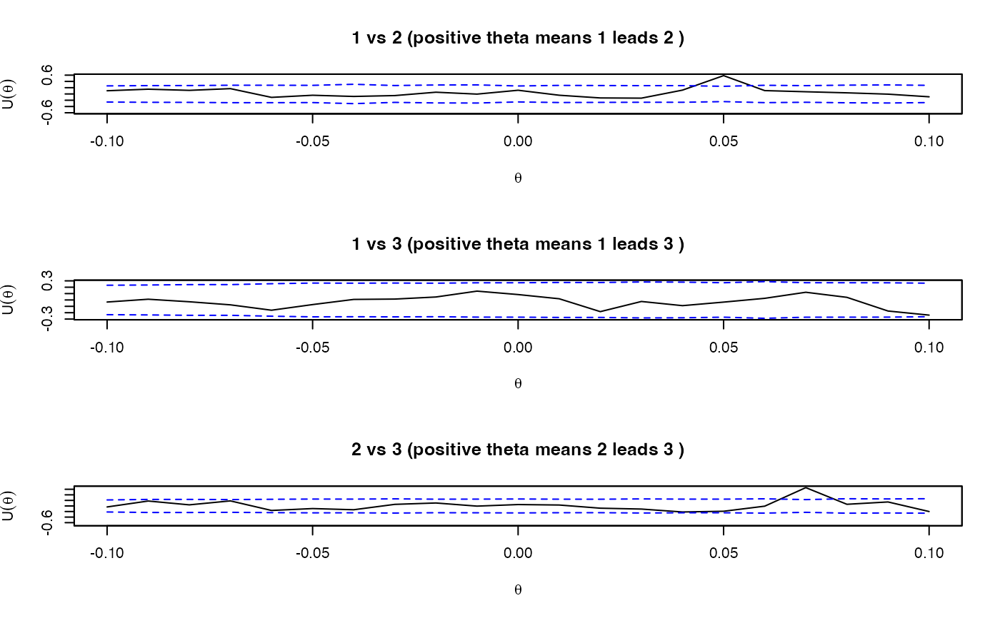

llag.RdEstimate the lead-lag parameters of discretely observed processes by maximizing the shifted Hayashi-Yoshida covariation contrast functions, following Hoffmann et al. (2013).
llag(x, from = -Inf, to = Inf, division = FALSE, verbose = (ci || ccor),
grid, psd = TRUE, plot = ci, ccor = ci, ci = FALSE, alpha = 0.01,
fisher = TRUE, bw, tol = 1e-6)an object of yuima-class or yuima.data-class.
whether llag returns matrices or not. The default is FALSE.
a numeric vector each of whose component(s) indicates the lower end of a finite grid on which the contrast function is evaluated, if grid is missing.
a numeric vector each of whose component(s) indicates the upper end of a finite grid on which the contrast function is evaluated, if grid is missing.
a numeric vector each of whose component(s) indicates the number of the points of a finite grid on which the contrast function is evaluated, if grid is missing.
a numeric vector or a list of numeric vectors. See 'Details'.
logical. If TRUE, the estimated cross-correlation functions are converted to the interval [-1,1]. See 'Details'.
logical. If TRUE, the estimated cross-correlation functions are plotted. If ci is also TRUE, the pointwise confidence intervals (under the null hypothesis that the corresponding correlation is zero) are also plotted. The default is FALSE.
logical. If TRUE, the estimated cross-correlation functions are returned. This argument is ignored if verbose is FALSE. The default is FALSE.
logical. If TRUE, (pointwise) confidence intervals of the estimated cross-correlation functions and p-values for the significance of the correlations at the estimated lead-lag parameters are calculated. Note that the confidence intervals are only plotted when plot=TRUE.
a posive number indicating the significance level of the confidence intervals for the cross-correlation functions.
logical. If TRUE, the p-values and the confidence intervals for the cross-correlation functions is evaluated after applying the Fisher z transformation. This argument is only meaningful if pval = "corr".
bandwidth parameter to compute the asymptotic variances. See 'Details' and hyavar for details.
tolelance parameter to avoid numerical errors in comparison of time stamps. All time stamps are divided by tol and rounded to integers. Note that the values of grid are also divided by tol and rounded to integers. A reasonable choice of tol is the minimum unit of time stamps. The default value 1e-6 supposes that the minimum unit of time stamps is greater or equal to 1 micro-second.
Let \(d\) be the number of the components of the zoo.data of the object x.
Let \(Xi_{ti_0},Xi_{ti_1},\dots,Xi_{ti_n(i)}\) be the observation data of the \(i\)-th component (i.e. the \(i\)-th component of the zoo.data of the object x).
The shifted Hayashi-Yoshida covariation contrast function \(Uij(\theta)\) of the observations \(Xi\) and \(Xj\) \((i<j)\) is defined by the same way as in Hoffmann et al. (2013), which corresponds to their cross-covariance function. The lead-lag parameter \(\theta_ij\) is defined as a maximizer of \(|Uij(\theta)|\). \(Uij(\theta)\) is evaluated on a finite grid \(Gij\) defined below. Thus \(\theta_ij\) belongs to this grid. If there exist more than two maximizers, the lowest one is selected.
If psd is TRUE, for any \(i,j\) the matrix \(C:=(Ukl(\theta))_{k,l\in{i,j}}\) is converted to (C%*%C)^(1/2) for ensuring the positive semi-definiteness, and \(Uij(\theta)\) is redefined as the \((1,2)\)-component of the converted \(C\). Here, \(Ukk(\theta)\) is set to the realized volatility of \(Xk\). In this case \(\theta_ij\) is given as a maximizer of the cross-correlation functions.
The grid \(Gij\) is defined as follows. First, if grid is missing, \(Gij\) is given by
$$a, a+(b-a)/(N-1), \dots, a+(N-2)(b-a)/(N-1), b,$$
where \(a,b\) and \(N\) are the \((d(i-1)-(i-1)i/2+(j-i))\)-th components of from, to and division respectively. If the corresponding component of from (resp. to) is -Inf (resp. Inf), \(a=-(tj_n(j)-ti_0)\) (resp. \(b=ti_n(i)-tj_0\)) is used, while if the corresponding component of division is FALSE, \(N=round(2max(n(i),n(j)))+1\) is used. Missing components are filled with -Inf (resp. Inf, FALSE). The default value -Inf (resp. Inf, FALSE) means that all components are -Inf (resp. Inf, FALSE). Next, if grid is a numeric vector, \(Gij\) is given by grid. If grid is a list of numeric vectors, \(Gij\) is given by the \((d(i-1)-(i-1)i/2+(j-i))\)-th component of grid.
The estimated lead-lag parameters are returned as the skew-symmetric matrix \((\theta_ij)_{i,j=1,\dots,d}\). If verbose is TRUE, the covariance matrix \((Uij(\theta_ij))_{i,j=1,\dots,d}\) corresponding to the estimated lead-lag parameters, the corresponding correlation matrix and the computed contrast functions are also returned. If further ccor is TRUE,the computed cross-correlation functions are returned as a list with the length \(d(d-1)/2\). For \(i<j\), the \((d(i-1)-(i-1)i/2+(j-i))\)-th component of the list consists of an object \(Uij(\theta)/sqrt(Uii(\theta)*Ujj(\theta))\) of class zoo indexed by \(Gij\).
If plot is TRUE, the computed cross-correlation functions are plotted sequentially.
If ci is TRUE, the asymptotic variances of the cross-correlations are calculated at each point of the grid by using the naive kernel approach descrived in Section 8.2 of Hayashi and Yoshida (2011). The implementation is the same as that of hyavar and more detailed description is found there.
If verbose is FALSE, a skew-symmetric matrix corresponding to the estimated lead-lag parameters is returned.
Otherwise, an object of class "yuima.llag", which is a list with the following components, is returned:
a skew-symmetric matrix corresponding to the estimated lead-lag parameters.
a covariance matrix corresponding to the estimated lead-lag parameters.
a correlation matrix corresponding to the estimated lead-lag parameters.
a matrix consisting of lead-lag ratios. See Huth and Abergel (2014) for details.
If ci is TRUE, the following component is added to the returned list:
a matrix of p-values for the significance of the correlations corresponding to the estimated lead-lag parameters.
If further ccor is TRUE, the following components are added to the returned list:
a list of computed cross-correlation functions.
a list of computed asymptotic variances of the cross-correlations (if ci = TRUE).
The default grid usually contains too many points, so it is better for users to specify this argument in order to reduce the computational time. See 'Examples' below for an example of the specification.
The evaluated p-values should carefully be interpreted because they are calculated based on pointwise confidence intervals rather than simultaneous confidence intervals (so there would be a multiple testing problem). Evaluation of p-values based on the latter will be implemented in the future extension of this function: Indeed, so far no theory has been developed for this. However, it is conjectured that the error distributions of the estimated cross-correlation functions are asymptotically independent if the grid is not dense too much, so p-values evaluated by this function will still be meaningful as long as sufficiently low significance levels are used.
Hayashi, T. and Yoshida, N. (2011) Nonsynchronous covariation process and limit theorems, Stochastic processes and their applications, 121, 2416--2454.
Hoffmann, M., Rosenbaum, M. and Yoshida, N. (2013) Estimation of the lead-lag parameter from non-synchronous data, Bernoulli, 19, no. 2, 426--461.
Huth, N. and Abergel, F. (2014) High frequency lead/lag relationships --- Empirical facts, Journal of Empirical Finance, 26, 41--58.
## Set a model
diff.coef.matrix <- matrix(c("sqrt(x1)", "3/5*sqrt(x2)",
"1/3*sqrt(x3)", "", "4/5*sqrt(x2)","2/3*sqrt(x3)",
"","","2/3*sqrt(x3)"), 3, 3)
drift <- c("1-x1","2*(10-x2)","3*(4-x3)")
cor.mod <- setModel(drift = drift,
diffusion = diff.coef.matrix,
solve.variable = c("x1", "x2","x3"))
set.seed(111)
## We use a function poisson.random.sampling
## to get observation by Poisson sampling.
yuima.samp <- setSampling(Terminal = 1, n = 1200)
#> Warning:
#> YUIMA: 'delta' (re)defined.
yuima <- setYuima(model = cor.mod, sampling = yuima.samp)
yuima <- simulate(yuima,xinit=c(1,7,5))
## intentionally displace the second time series
data2 <- yuima@data@zoo.data[[2]]
time2 <- time(data2)
theta2 <- 0.05 # the lag of x2 behind x1
stime2 <- time2 + theta2
time(yuima@data@zoo.data[[2]]) <- stime2
data3 <- yuima@data@zoo.data[[3]]
time3 <- time(data3)
theta3 <- 0.12 # the lag of x3 behind x1
stime3 <- time3 + theta3
time(yuima@data@zoo.data[[3]]) <- stime3
## sampled data by Poisson rules
psample<- poisson.random.sampling(yuima,
rate = c(0.2,0.3,0.4), n = 1000)
## plot
plot(psample)
## cce
cce(psample)
#> $covmat
#> Series 1 Series 2 Series 3
#> Series 1 1.0341733 0.3703059 0.1689927
#> Series 2 0.3703059 8.4164209 0.3131220
#> Series 3 0.1689927 0.3131220 3.8125561
#>
#> $cormat
#> Series 1 Series 2 Series 3
#> Series 1 1.00000000 0.12551634 0.08510659
#> Series 2 0.12551634 1.00000000 0.05527664
#> Series 3 0.08510659 0.05527664 1.00000000
#>
## lead-lag estimation (with cross-correlation plots)
par(mfcol=c(3,1))
result <- llag(psample, plot=TRUE)
## estimated lead-lag parameter
result
#> Series 1 Series 2 Series 3
#> Series 1 0.0000000 0.05232350 0.12000000
#> Series 2 -0.0523235 0.00000000 0.07151363
#> Series 3 -0.1200000 -0.07151363 0.00000000
## computing pointwise confidence intervals
llag(psample, ci = TRUE)
#> Estimated lead-lag parameters
#> Series 1 Series 2 Series 3
#> Series 1 0.0000000 0.05232350 0.12000000
#> Series 2 -0.0523235 0.00000000 0.07151363
#> Series 3 -0.1200000 -0.07151363 0.00000000
#> Corresponding p-values
#> Series 1 Series 2 Series 3
#> Series 1 1.000000e+00 8.178210e-06 1.349969e-04
#> Series 2 8.178210e-06 1.000000e+00 2.062519e-06
#> Series 3 1.349969e-04 2.062519e-06 1.000000e+00
#> Corresponding covariance matrix
#> Series 1 Series 2 Series 3
#> Series 1 1.0341733 1.731379 0.8433603
#> Series 2 1.7313790 8.416421 3.6797097
#> Series 3 0.8433603 3.679710 3.8125561
#> Corresponding correlation matrix
#> Series 1 Series 2 Series 3
#> Series 1 1.0000000 0.5868563 0.4247255
#> Series 2 0.5868563 1.0000000 0.6495936
#> Series 3 0.4247255 0.6495936 1.0000000
#> Lead-lag ratio
#> Series 1 Series 2 Series 3
#> Series 1 1.0000000 2.251106 2.560784
#> Series 2 0.4442260 1.000000 1.842937
#> Series 3 0.3905055 0.542612 1.000000
## In practice, it is better to specify the grid because the default grid contains too many points.
## Here we give an example for how to specify it.
## We search lead-lag parameters on the interval [-0.1, 0.1] with step size 0.01
G <- seq(-0.1,0.1,by=0.01)
## lead-lag estimation (with computing confidence intervals)
result <- llag(psample, grid = G, ci = TRUE)
## Since the true lead-lag parameter 0.12 between x1 and x3 is not contained
## in the searching grid G, we see that the corresponding cross-correlation
## does not exceed the cofidence interval
## detailed output
## the p-value for the (1,3)-th component is high
result
#> Estimated lead-lag parameters
#> Series 1 Series 2 Series 3
#> Series 1 0.00 0.05 0.10
#> Series 2 -0.05 0.00 0.07
#> Series 3 -0.10 -0.07 0.00
#> Corresponding p-values
#> Series 1 Series 2 Series 3
#> Series 1 1.000000e+00 3.280303e-06 2.502310e-02
#> Series 2 3.280303e-06 1.000000e+00 4.622514e-07
#> Series 3 2.502310e-02 4.622514e-07 1.000000e+00
#> Corresponding covariance matrix
#> Series 1 Series 2 Series 3
#> Series 1 1.0341733 1.725663 -0.4725133
#> Series 2 1.7256633 8.416421 3.7335168
#> Series 3 -0.4725133 3.733517 3.8125561
#> Corresponding correlation matrix
#> Series 1 Series 2 Series 3
#> Series 1 1.0000000 0.5849189 -0.2379629
#> Series 2 0.5849189 1.0000000 0.6590923
#> Series 3 -0.2379629 0.6590923 1.0000000
#> Lead-lag ratio
#> Series 1 Series 2 Series 3
#> Series 1 1.0000000 4.1345671 2.427283
#> Series 2 0.2418633 1.0000000 4.436410
#> Series 3 0.4119833 0.2254075 1.000000
## Finally, we can examine confidence intervals of other significant levels
## and/or without the Fisher z-transformation via the plot-method defined
## for yuima.llag-class objects as follows
plot(result, alpha = 0.001)
plot(result, fisher = FALSE)

par(mfcol=c(1,1))